Prime Dental runs on the computer at your reception desk. Patient records, clinical notes, prescriptions, billing, stock and PHC compliance registers — all in one place, all stored on your own machine. No monthly cloud bill, no waiting for the connection to come back.
Windows 10 / 11 · about 5 MB to install · your data never leaves the clinic
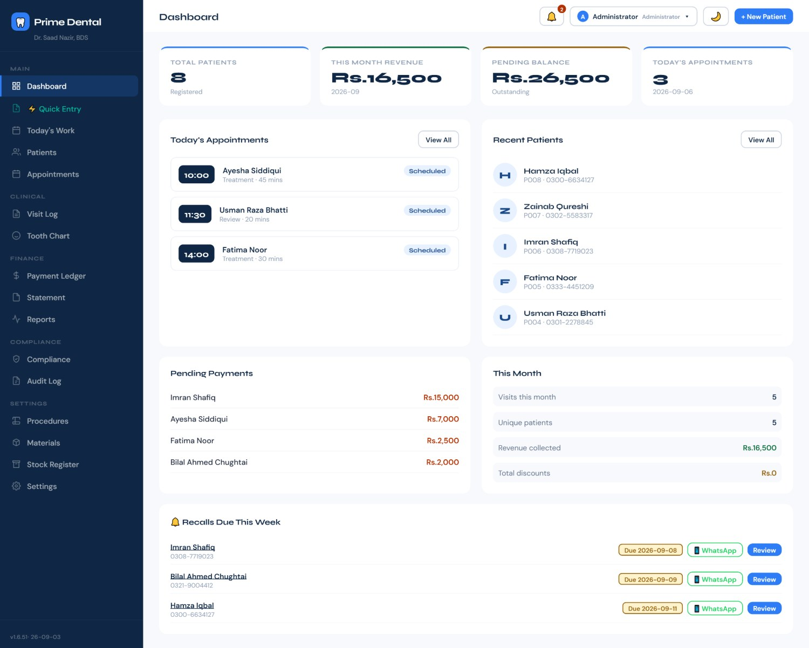
Recorded in the actual app — from the morning dashboard through a complete patient visit, billing, stock and the compliance registers.
YOUTUBE_ID at the top of index.html and this becomes the player.Every screen below is the real software — nothing mocked up. The patients are invented for the demo.
No hunting. The dashboard shows who is coming today, who owes money, and who is due for a recall — the three things you actually need before the first patient sits down.
Each patient gets a unique MR number, full contact and medical history, allergies, current medications and referral source. Search by name, number or MR.
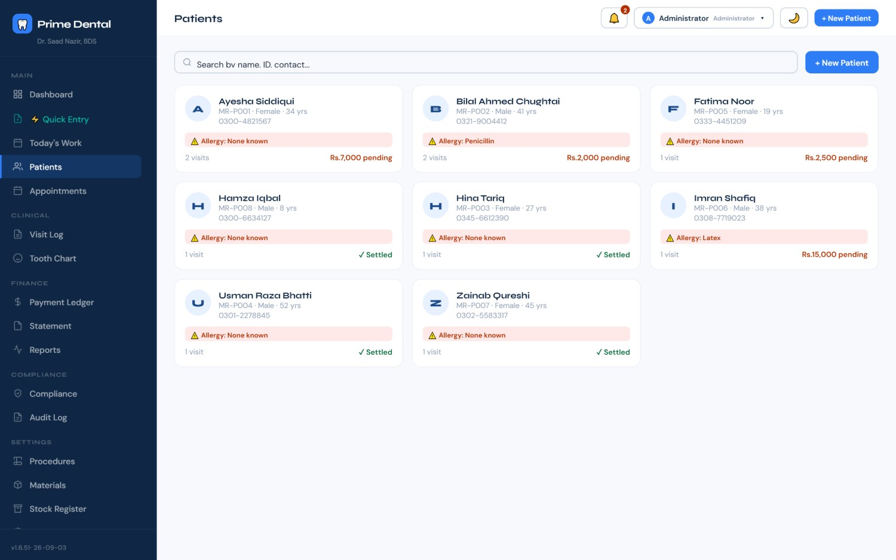
Every visit is recorded as a proper clinical note — complaint, history, findings, diagnosis, treatment, prescription and instructions — instead of one free-text box you can never search later.
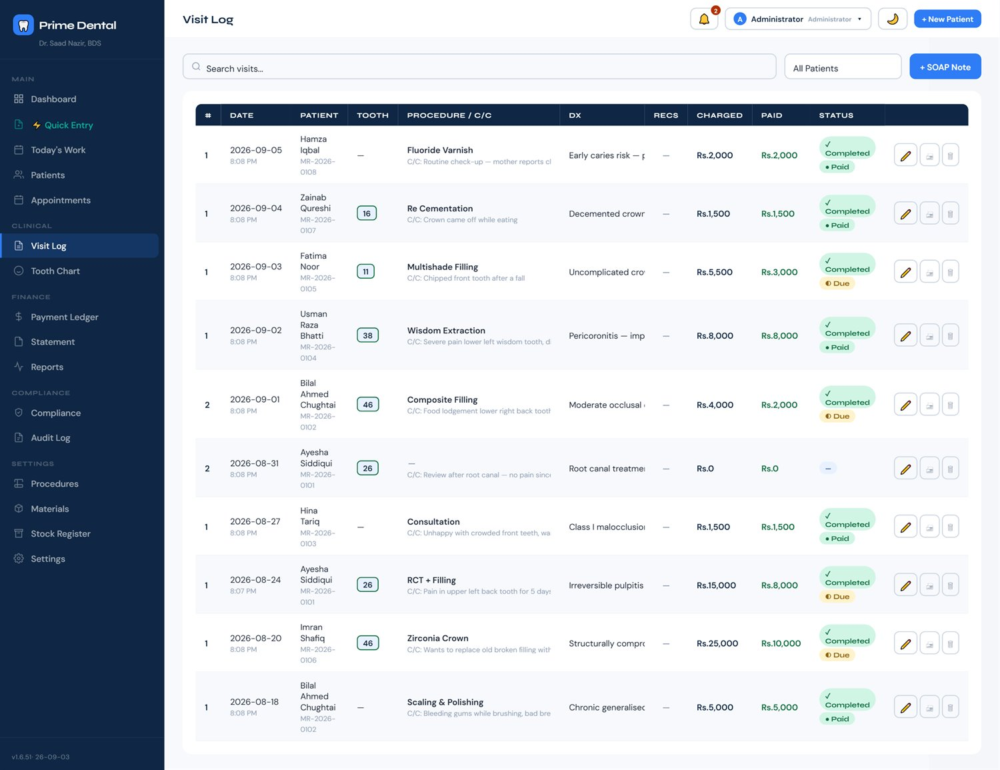
The full FDI chart for every patient, built up from the visits you have already recorded. Click a tooth to see its whole history rather than scrolling through years of notes.
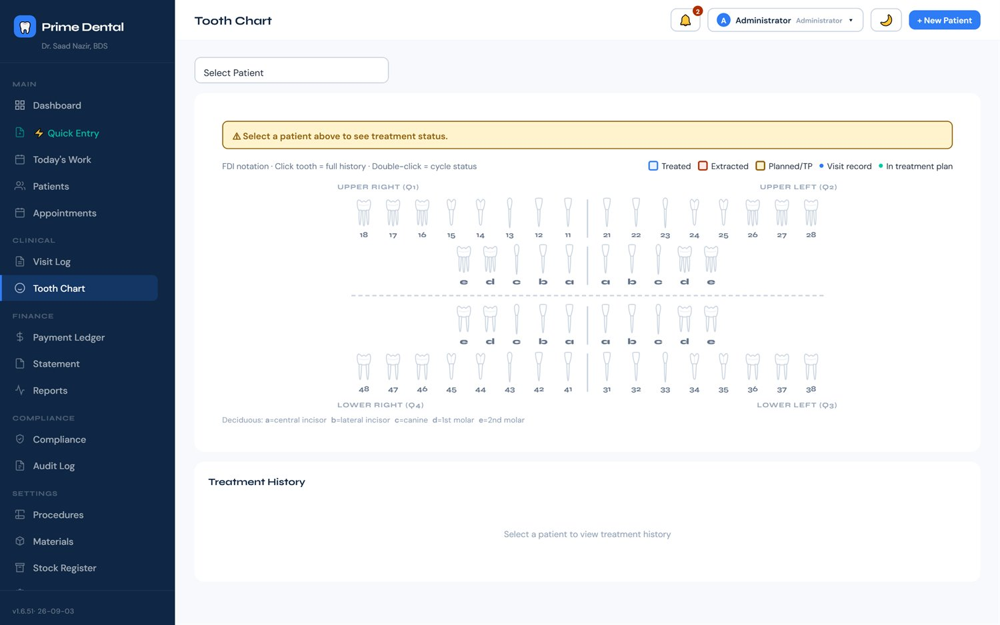
One for your file, one for the patient's hand — both on your letterhead with your name and PMDC number, both generated automatically from the note you already wrote. No retyping, no separate prescription pad.
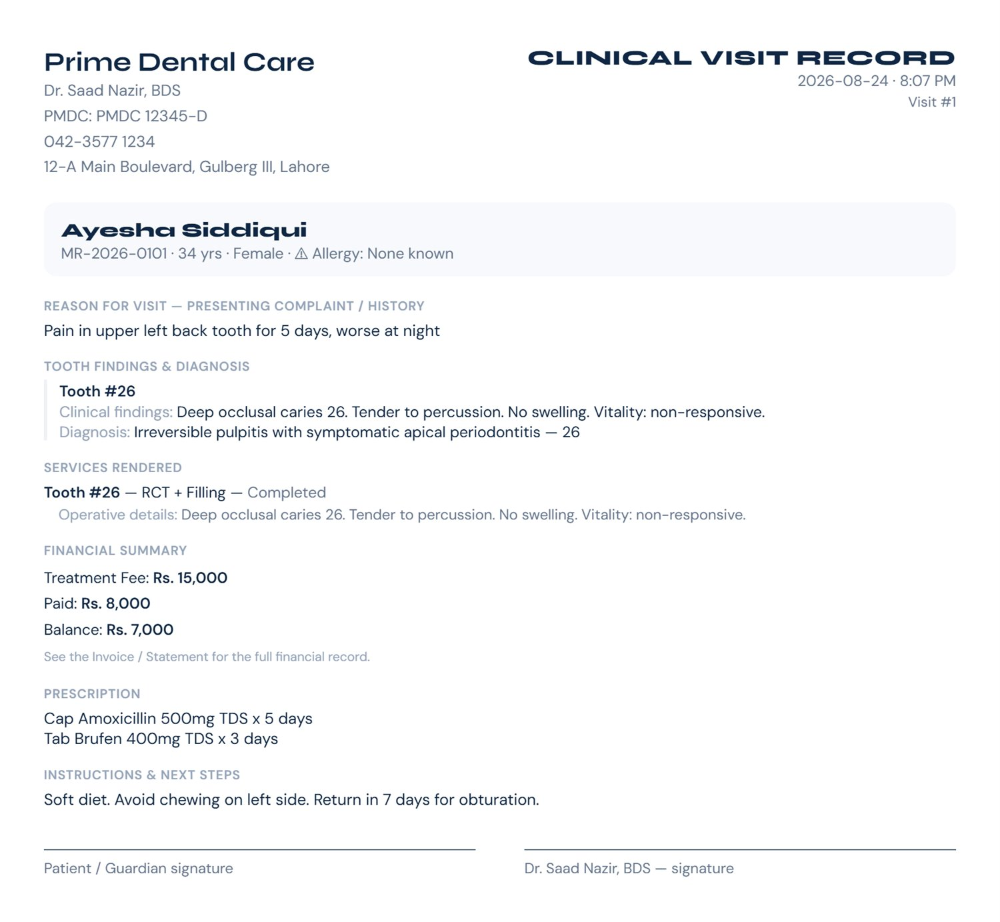
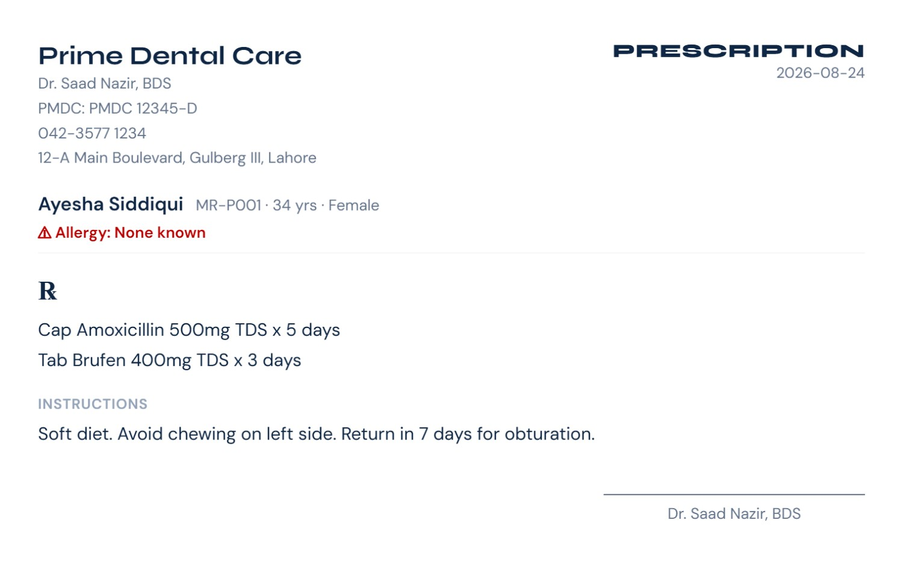
Every payment is attached to the treatment it paid for — not dumped in a daybook. Part-payments, discounts and multi-procedure packages all behave properly.
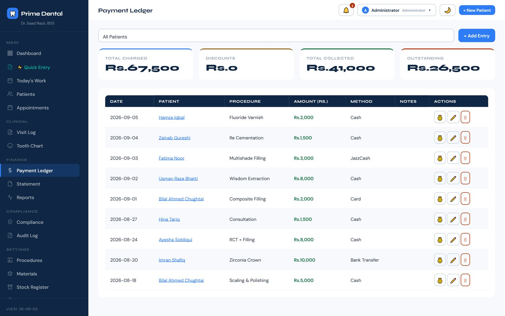
What did the clinic earn this month, which procedures actually bring in the money, who hasn't come back — without exporting anything to Excel first.
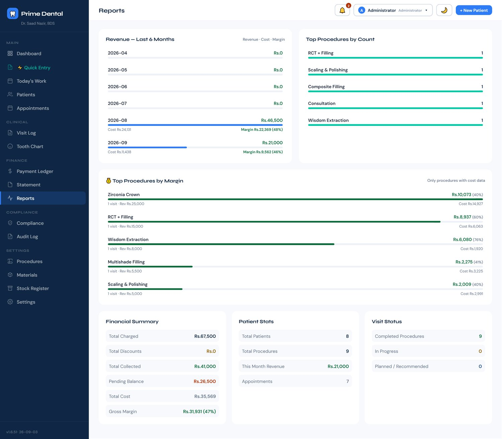
Most software counts boxes. A composite syringe isn't a box — it's roughly thirty restorations. Prime Dental tracks packs, pieces and uses per piece, so what it tells you is close to the truth.
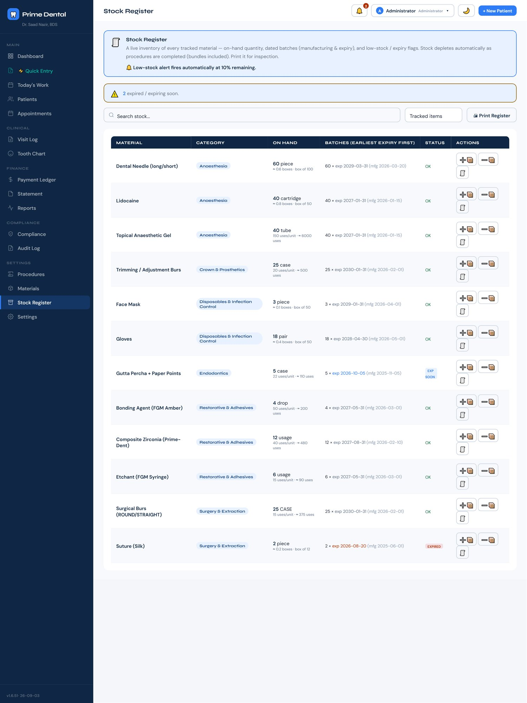
Set your chair cost per minute and the materials each procedure consumes, and the software works out what it costs before you decide what to charge. Your full catalogue, priced.
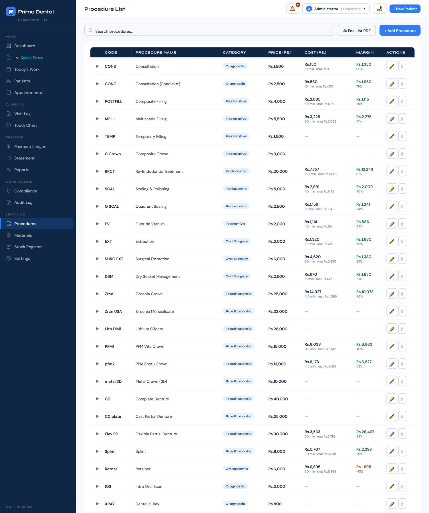
The registers a PHC inspection asks for, kept as you go instead of reconstructed the night before — referrals, incidents, sentinel events and adverse drug reactions.
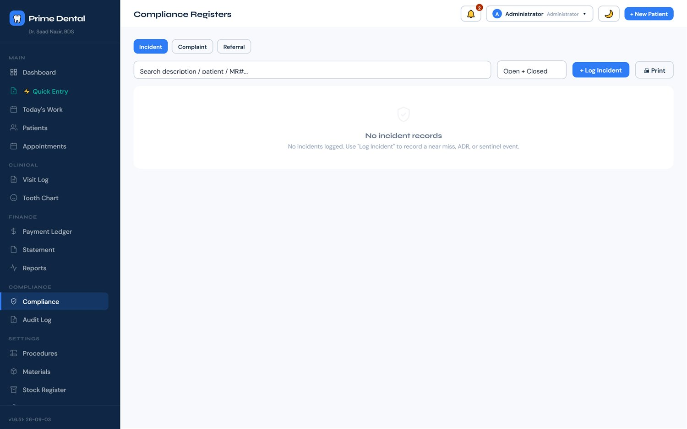
Who changed what, and when. The audit log records it automatically — you cannot turn it off, and it captures the fact of a change without ever storing the patient's clinical text.
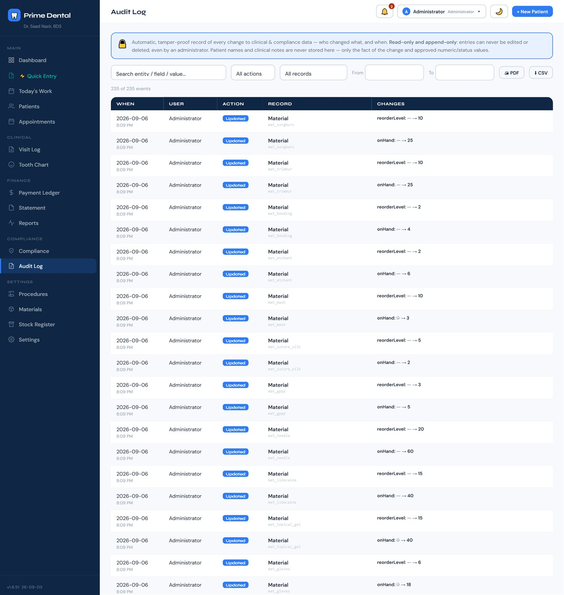
Book the chair, set the status as the day moves, and send reminders straight to WhatsApp. Recalls come back to the dashboard on their own when they fall due.
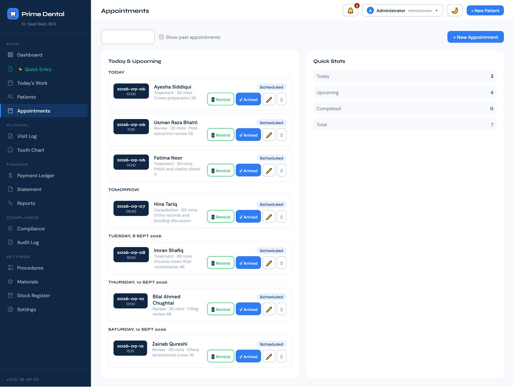
That's fine for a shopping list. It's a different decision for ten years of patient records in a country where the connection drops and the bill renews every month.
Load-shedding, a dead router, a bad day at the exchange — none of it reaches your patient records. The software doesn't know or care whether you're online.
Your patients' names, histories and finances sit on your machine. Not on a server you can't see, in a country you didn't choose, under terms that can change.
Export the lot to CSV or PDF any time. No subscription holding your data hostage, no migration fee, no "contact sales to close your account".
Prime Dental is being rolled out to a small number of clinics first, so each one gets set up properly. Message me and I'll walk you through the install myself.
Message me on WhatsAppNo. Prime Dental installs on your Windows PC and runs entirely on that machine. The only time it uses the internet is to check for a software update, and it works perfectly well if it never gets one.
On your computer, in your clinic. It is never uploaded anywhere. That also means the backup is your responsibility — the software writes automatic backups to a folder you choose, and I'll set that up with you during installation. Keep a copy on a USB or an external drive.
Not yet. Each licence is tied to one machine, which is the trade-off for keeping everything offline and local. Most single-chair and two-chair clinics run it on the reception PC. If you need several computers sharing one record, tell me — it changes what I build next.
You export it. Everything comes out as CSV or PDF, and the records stay readable on your machine. There is no lock-in and nothing to negotiate.
Yes. The installer isn't code-signed yet — a certificate is an annual cost that only makes sense once more clinics are running. Windows shows "unknown publisher"; you click More info → Run anyway. I'll be on the call with you when you do it.
Message me and we'll talk about it based on your clinic. I'd rather quote you honestly after you've used it for a month than publish a number that fits nobody.
A practising dentist who got tired of the gap between what dental software promises and what it does on a normal Tuesday in a Pakistani clinic. It was built in a working practice, against real patients and real PHC requirements.